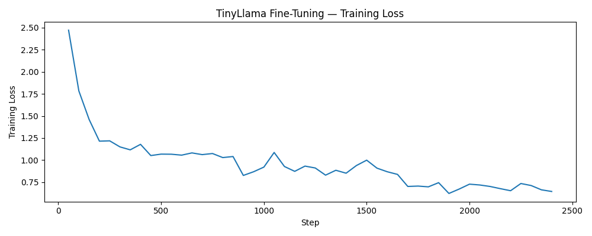
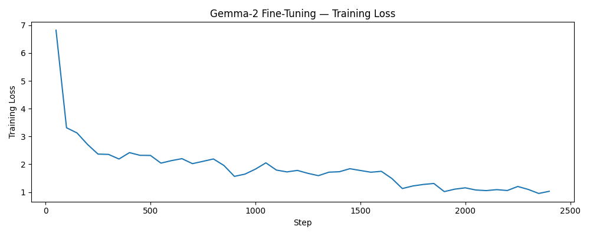

Show/Hide code
!pip install -q transformers peft bitsandbytes accelerate datasets pyarrowThis chapter fine-tunes two compact open-source LLMs for three-class sentiment classification (negative / neutral / positive) using AutoModelForSequenceClassification with QLoRA (4-bit quantization + LoRA adapters). The model outputs a label directly via softmax - no text generation needed. Both models were trained on Google Colab Pro (A100 GPU).
Code execution is disabled in Quarto (eval: false) because training runs in Colab, not during book rendering. Results are hardcoded after each run.
!pip install -q transformers peft bitsandbytes accelerate datasets pyarrowimport pandas as pd
import numpy as np
import torch
from pathlib import Path
from datasets import Dataset
from transformers import (
AutoTokenizer,
AutoModelForSequenceClassification,
BitsAndBytesConfig,
TrainingArguments,
Trainer,
)
from peft import LoraConfig, get_peft_model, prepare_model_for_kbit_training
from sklearn.metrics import f1_score, classification_reportfrom google.colab import drive
drive.mount("/content/drive")
PROJECT_DIR = Path("/content/drive/MyDrive/CLT/project")
train_df = pd.read_parquet(PROJECT_DIR / "train.parquet")
test_df = pd.read_parquet(PROJECT_DIR / "test.parquet")
print(f"Train: {len(train_df):,} | Test: {len(test_df):,}")
print(train_df["sentiment_label"].value_counts())We recode (partly) negative to negative, tokenize full_content (truncated to 512 tokens), and map string labels to integers.
train_df["sentiment_label"] = train_df["sentiment_label"].str.replace("(partly) negative", "negative")
test_df["sentiment_label"] = test_df["sentiment_label"].str.replace("(partly) negative", "negative")tokenizer = AutoTokenizer.from_pretrained(MODEL_NAME)
if tokenizer.pad_token is None:
tokenizer.pad_token = tokenizer.eos_token
def tokenize(batch):
enc = tokenizer(
batch["full_content"],
truncation=True,
max_length=MAX_LENGTH,
padding="max_length",
)
enc["labels"] = [LABEL2ID[l] for l in batch["sentiment_label"]]
return enc
train_dataset = Dataset.from_pandas(train_df[["full_content", "sentiment_label"]]) \
.map(tokenize, batched=True, remove_columns=["full_content", "sentiment_label"])
test_dataset = Dataset.from_pandas(test_df[["full_content", "sentiment_label"]]) \
.map(tokenize, batched=True, remove_columns=["full_content", "sentiment_label"])
train_dataset.set_format("torch")
test_dataset.set_format("torch")bnb_config = BitsAndBytesConfig(
load_in_4bit=True,
bnb_4bit_quant_type="nf4",
bnb_4bit_compute_dtype=torch.float16,
bnb_4bit_use_double_quant=True,
)peft_config = LoraConfig(
r=16,
lora_alpha=32,
lora_dropout=0.05,
bias="none",
task_type="SEQ_CLS",
target_modules=["q_proj", "v_proj"],
)def compute_metrics(eval_pred):
logits, labels = eval_pred
preds = np.argmax(logits, axis=-1)
macro_f1 = f1_score(labels, preds, average="macro")
return {"macro_f1": macro_f1}TinyLlama 1.1B is a compact open-source decoder model trained on 3 trillion tokens. Despite its small size, it provides strong general language understanding and trains efficiently with QLoRA on an A100 GPU.
MODEL_NAME = "TinyLlama/TinyLlama-1.1B-Chat-v1.0"
model = AutoModelForSequenceClassification.from_pretrained(
MODEL_NAME,
num_labels=3,
id2label=ID2LABEL,
label2id=LABEL2ID,
quantization_config=bnb_config,
device_map="auto",
)
model.config.pad_token_id = tokenizer.pad_token_id
model = prepare_model_for_kbit_training(model)
model = get_peft_model(model, peft_config)
model.print_trainable_parameters()training_args = TrainingArguments(
output_dir="outputs/tinyllama-sentiment",
per_device_train_batch_size=8,
gradient_accumulation_steps=2,
num_train_epochs=3,
learning_rate=2e-4,
logging_steps=50,
save_strategy="no",
report_to="none",
fp16=True,
seed=SEED,
)trainer = Trainer(
model=model,
args=training_args,
train_dataset=train_dataset,
eval_dataset=test_dataset,
compute_metrics=compute_metrics,
)
trainer.train()import matplotlib.pyplot as plt
loss_log = trainer.state.log_history
steps = [x["step"] for x in loss_log if "loss" in x]
losses = [x["loss"] for x in loss_log if "loss" in x]
plt.figure(figsize=(10, 4))
plt.plot(steps, losses)
plt.xlabel("Step")
plt.ylabel("Training Loss")
plt.title("TinyLlama 1.1B - Training Loss")
plt.tight_layout()
plt.savefig(PROJECT_DIR / "tinyllama_training_loss.png")
plt.show()predictions = trainer.predict(test_dataset)
y_pred = np.argmax(predictions.predictions, axis=-1)
y_true = predictions.label_ids
y_pred_labels = [ID2LABEL[i] for i in y_pred]
y_true_labels = [ID2LABEL[i] for i in y_true]
macro_f1 = f1_score(y_true_labels, y_pred_labels, average="macro",
labels=["negative", "neutral", "positive"])
print(f"Macro-F1: {macro_f1:.4f}")
print(classification_report(y_true_labels, y_pred_labels,
labels=["negative", "neutral", "positive"]))
trainer.model.save_pretrained(PROJECT_DIR / "tinyllama-sentiment")
tokenizer.save_pretrained(PROJECT_DIR / "tinyllama-sentiment")
pd.DataFrame({"true": y_true_labels, "pred": y_pred_labels}).to_csv(
PROJECT_DIR / "tinyllama_predictions.csv", index=False)TinyLlama 1.1B was fine-tuned on an A100 GPU in 28 minutes. The training loss declined steadily from ~2.5 to ~0.65 over 2,400 steps, with a notable drop around step 900. The curve was still slightly decreasing at the end of training, suggesting further potential with additional epochs.

| Class | Precision | Recall | F1 |
|---|---|---|---|
| negative | 0.76 | 0.68 | 0.72 |
| neutral | 0.81 | 0.85 | 0.83 |
| positive | 0.74 | 0.69 | 0.72 |
| macro avg | 0.77 | 0.74 | 0.757 |
Gemma 2 2B is Google’s compact open-source model, roughly twice the size of TinyLlama. It requires a HuggingFace account with accepted usage terms and an HF_TOKEN secret in Colab.
from google.colab import userdata
from huggingface_hub import login
login(token=userdata.get("HF_TOKEN"))
MODEL_NAME = "google/gemma-2-2b"
model = AutoModelForSequenceClassification.from_pretrained(
MODEL_NAME,
num_labels=3,
id2label=ID2LABEL,
label2id=LABEL2ID,
quantization_config=bnb_config,
device_map="auto",
)
model.config.pad_token_id = tokenizer.pad_token_id
model = prepare_model_for_kbit_training(model)
model = get_peft_model(model, peft_config)
model.print_trainable_parameters()training_args = TrainingArguments(
output_dir="outputs/gemma2-sentiment",
per_device_train_batch_size=8,
gradient_accumulation_steps=2,
num_train_epochs=3,
learning_rate=2e-4,
logging_steps=50,
save_strategy="no",
report_to="none",
bf16=True,
fp16=False,
seed=SEED,
)trainer = Trainer(
model=model,
args=training_args,
train_dataset=train_dataset,
eval_dataset=test_dataset,
compute_metrics=compute_metrics,
)
trainer.train()loss_log = trainer.state.log_history
steps = [x["step"] for x in loss_log if "loss" in x]
losses = [x["loss"] for x in loss_log if "loss" in x]
plt.figure(figsize=(10, 4))
plt.plot(steps, losses)
plt.xlabel("Step")
plt.ylabel("Training Loss")
plt.title("Gemma 2 2B - Training Loss")
plt.tight_layout()
plt.savefig(PROJECT_DIR / "gemma2_training_loss.png")
plt.show()predictions = trainer.predict(test_dataset)
y_pred = np.argmax(predictions.predictions, axis=-1)
y_true = predictions.label_ids
y_pred_labels = [ID2LABEL[i] for i in y_pred]
y_true_labels = [ID2LABEL[i] for i in y_true]
macro_f1 = f1_score(y_true_labels, y_pred_labels, average="macro",
labels=["negative", "neutral", "positive"])
print(f"Macro-F1: {macro_f1:.4f}")
print(classification_report(y_true_labels, y_pred_labels,
labels=["negative", "neutral", "positive"]))
trainer.model.save_pretrained(PROJECT_DIR / "gemma2-sentiment")
tokenizer.save_pretrained(PROJECT_DIR / "gemma2-sentiment")
pd.DataFrame({"true": y_true_labels, "pred": y_pred_labels}).to_csv(
PROJECT_DIR / "gemma2_predictions.csv", index=False)Gemma 2 2B was fine-tuned on an A100 GPU in 66 minutes. The training loss started higher (~6.8) due to the larger randomly-initialized classification head, but declined to ~1.03 by the end of training - still higher than TinyLlama (~0.65), suggesting it would benefit more from additional epochs.

| Class | Precision | Recall | F1 |
|---|---|---|---|
| negative | 0.75 | 0.69 | 0.72 |
| neutral | 0.82 | 0.86 | 0.84 |
| positive | 0.76 | 0.71 | 0.73 |
| macro avg | 0.77 | 0.75 | 0.761 |
Despite being roughly twice the size, Gemma 2 2B only marginally outperforms TinyLlama 1.1B (+0.4% Macro-F1). Both models show similar class-level patterns: neutral is predicted most reliably, while negative and positive classes are harder to distinguish - consistent with the class imbalance in the dataset.
| Model | Parameters | Macro-F1 | Training Time |
|---|---|---|---|
| TinyLlama 1.1B | 1.1B | 0.757 | 28 min |
| Gemma 2 2B | 2B | 0.761 | 66 min |
We estimate the CO2 footprint of both fine-tuning runs based on A100 TDP (400W), a PUE factor of 1.1 for data center overhead, and the Swiss grid carbon intensity of 100 g CO2/kWh.
| Model | Energy (kWh) | CO2 (g) |
|---|---|---|
| TinyLlama 1.1B | ~0.25 | ~65 |
| Gemma 2 2B | ~0.48 | ~125 |
Gemma 2 consumed roughly twice the energy for a marginal improvement in F1 - an important trade-off to consider when selecting models for production use.